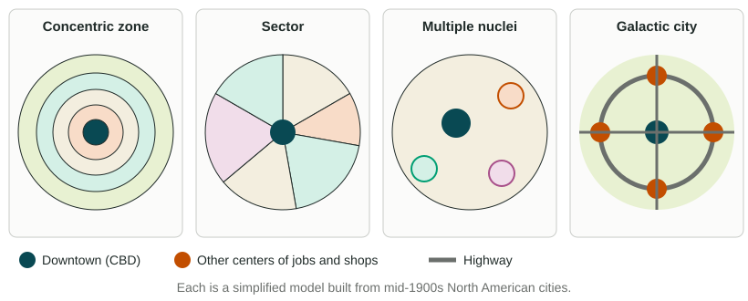
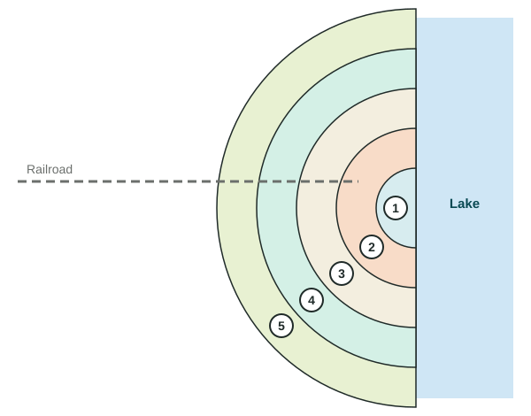

The Internal Structure of Cities
Urban models describe how land use is arranged inside cities.
Part 1 · Hook
Why this matters
Part 2 · Before you start
What this builds on
Part 3 · Prerequisite check
Quick check before you start
1. What does bid-rent theory predict about land near a market or city center?
- Land users pay the most for it, so land there is used most intensively
- It is the cheapest land, so it is used for ranching
- It is left empty to protect the center
- It costs the same as land far away
Show the answer
Access is worth most at the center, so bids and land values are highest there and fall with distance.
- Correct: Land users pay the most for it, so land there is used most intensively:
- It is the cheapest land, so it is used for ranching:
- It is left empty to protect the center:
- It costs the same as land far away:
2. Which describes an edge city?
- A suburban center of offices and stores with more jobs than residents
- A rural area of commuters' homes on large lots
- A city of 20 million people or more
- An old neighborhood next to downtown
Show the answer
Edge cities are job centers in the suburbs, often where highways meet.
- Correct: A suburban center of offices and stores with more jobs than residents:
- A rural area of commuters' homes on large lots:
- A city of 20 million people or more:
- An old neighborhood next to downtown:
Part 4 · See it
See it first

Part 5 · Step by step
How it works, step by step
- Land at the center is the easiest place for everyone to reachbusinesses outbid homes for it, so the central business district (CBD) has the tallest buildings and highest land values
- Land values fall with distance from the CBDuses sort into zones, as in the concentric zone model
- Rail lines, rivers and boulevards make some directions easier to travelzones stretch into wedges along them, as in the sector model
- Cars, highways and airports let jobs locate away from downtownseveral centers form, as in the multiple nuclei and galactic city models
Part 6 · Key ideas
Key ideas
- The central business district (CBD) is the commercial heart of a city, with the highest land values. Bid-rent theory explains why: the center is the most accessible place.
- North American models: concentric zone (rings), sector (wedges along transport lines), multiple nuclei (several centers) and galactic city (old downtown plus edge cities along a ring highway).
- Regional models: the Latin American city (a wealthy spine, rings that get poorer outward, squatter settlements at the edge), the Southeast Asian city (focused on the old port) and the African city (several CBDs).
- Every model is simplified from certain cities at a certain time. Judge its fit: say where it works, where it fails, and why.
Part 7 · Misconception
A common mistake
The wrong idea: The galactic city model is the same as the multiple nuclei model, since both have more than one center.
What actually happens: Multiple nuclei (1945) has several centers of different kinds, such as a port, a university and an industrial park, scattered through the city. The galactic city (from the 1980s) keeps an old downtown and places edge cities at intervals along a ring highway around the whole metro area, built for the car.
Part 8 · Check yourself
Check yourself
Exam-style questions. Anything you miss goes into your review queue.
Image
A city model with numbered zones

1. Which model does the drawing show?
- The sector model
- The multiple nuclei model
- The concentric zone model
- The galactic city model
Show the answer
Equal rings around one center, with no wedges and no separate centers, are the concentric zone model.
- The sector model: The sector model uses wedges, and the drawing has none.
- The multiple nuclei model: The multiple nuclei model has several centers; the drawing has one.
- Correct: The concentric zone model: Right: rings around one center.
- The galactic city model: The galactic city model has edge cities along a ring highway.
2. In which numbered zone would this model place factories and run-down housing where new immigrants first settle?
- Zone 1
- Zone 2
- Zone 3
- Zone 5
Show the answer
Zone 2 is the zone in transition, just outside the CBD: factories, warehouses and cheap, crowded housing.
- Zone 1: Zone 1 is the CBD of offices and stores.
- Correct: Zone 2: Right: the zone in transition is next to the CBD.
- Zone 3: Zone 3 holds workers who have moved up out of zone 2.
- Zone 5: Zone 5 is the commuter zone at the edge.
3. A family earns more money and moves from zone 3 to zone 4. What does the model predict for the home they leave?
- A poorer household moves into it
- It is torn down for a new office tower
- It becomes part of the CBD
- It stays empty for good
Show the answer
In the model, groups move outward as they gain income, and poorer newcomers take their place: a step-by-step outward movement.
- Correct: A poorer household moves into it: Right: each zone is taken over by the group from the zone inside it.
- It is torn down for a new office tower: Office towers belong in zone 1, not zone 3.
- It becomes part of the CBD: The CBD grows slowly into zone 2, not zone 3.
- It stays empty for good: The model predicts the home is filled, not left empty.
4. The drawing shows a railroad, but the zones ignore it. Which model would better show factories stretching out along the rail line?
- The concentric zone model
- The rank-size rule
- The central place model
- The sector model
Show the answer
The sector model lets land uses stretch into wedges along transport lines, such as a factory wedge beside a railroad.
- The concentric zone model: That is the model drawn, which ignores the railroad.
- The rank-size rule: The rank-size rule is about city sizes in a country, not land use inside a city.
- The central place model: Central place theory is about spacing between settlements.
- Correct: The sector model: Right: wedges along transport lines are the sector model.
5. Metro Atlanta has edge cities, such as Perimeter Center and Cumberland, near interchanges on its I-285 beltway, and many people drive between suburbs and edge cities without going downtown. Which model fits best?
- Multiple nuclei
- Galactic city
- Sector
- Concentric zone
Show the answer
Edge cities spaced along a ring highway around an old downtown are the galactic city model.
- Multiple nuclei: Multiple nuclei has several centers of different kinds, not edge cities set along a beltway.
- Correct: Galactic city: Right: edge cities along a beltway.
- Sector: The sector model has wedges from one CBD.
- Concentric zone: The concentric zone model has rings around one CBD.
6. Build the galactic city model: place each part from the center outward.
Galactic city model
- Ring 1 (innermost)
- Ring 2
- Ring 3 (outermost)
Pick a piece, then the place it belongs. Drag works too. Pick a filled place to take its piece back.
Show the answer
Around the old downtown: older inner suburbs, then the beltway with edge cities at its interchanges, then exurbs. The zone in transition belongs to the concentric zone model.
- Ring 1 (innermost): Older inner suburbs
- Ring 2: Beltway with edge cities
- Ring 3 (outermost): Exurbs among farms
Part 9 · Summary
Summary
Part 10 · Up next
What comes next
Part 11 · Connections